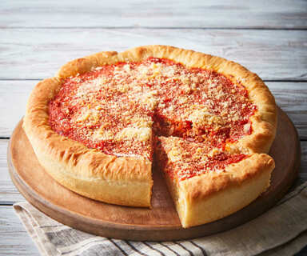

Deep Dish Pizza

Description
You know what is better than a cripsy, flaky, crust filled with rich tomato sauce and pizza toppings. NOTHING! This recipe will teach you how to make your
own Chi town pie right from the comfort of your own home.
Ingredients
- 1 teaspoon granulated sugar
- 1 packet (2 1/4 teaspoons) active dry yeast
- 18 ounces all-purpose flour (about 3 1/2 cups)
- 2 teaspoons fine sea salt
- 1/8 teaspoon cream of tartar
- 1/2 cup plus 3 tablespoons corn oil, plus additional for oiling the bowl
- 1 tablespoon melted unsalted butter
- 12 ounces deli sliced part skim mozzarella
- 1 pound bulk Italian sausage
- 8 ounces thinly sliced pepperoni
- One 28-ounce can whole San Marzano tomatoes, crushed by hand
- Grated Parmesan, for topping and garnish
- 1/2 teaspoon crushed red pepper flakes(optional)
- 3 garlic cloves, minced
- 794g crushed tomatoes
- 1/4 teaspoon granulated sugar
Steps
- Mix sugar, yeast and 11 ounces room temperature water (about 80 degrees) in a bowl and let bloom for 15 minutes. Combine flour, salt and cream of
tartar in the bowl of a stand mixer. Once yeast has bloomed, add to dry ingredients along with corn oil. Gently combine with a rubber spatula until
a rough ball is formed.
-
Knead on low speed with the dough hook for 90 seconds. Transfer to a lightly oiled bowl and proof until doubled in size, about 6 hours. Punch down and
let dough settle for 15 more minutes.
-
Position an oven rack in the middle of the oven and preheat to 450 degrees F.
-
Coat bottom and sides of a 12-inch cake pan or traditional Chicago style pizza pan with melted butter. Using your hands, spread out about
three-quarters of the dough across the bottom and up the sides of the pan (save the remainder for another use). Cover entire bottom in mozzarella,
all the way up to the edge. Cover half with a thin, even layer of raw sausage. Cover the other half with the pepperoni. Top with a couple handfuls
of crushed tomatoes. Spread out with hands to the edge. Sprinkle top evenly with grated Parm.
-
Bake, rotating halfway through, until golden around the edge, about 25 minutes. Let rest for about 5 minutes, then either gently lift pizza out of
pan or just cut your slice out of the pan like a pie!